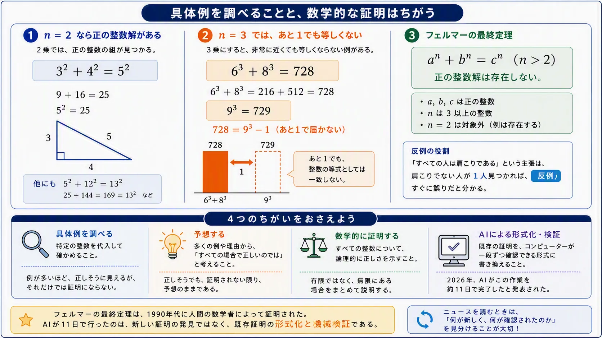

まずは2乗で試してみる
次の形の式を考える。
an + bn = cn
指数がn = 2のとき、この式を満たす正の整数は実際に存在する。たとえば、a = 3、b = 4、c = 5を入れると、
| 32 + 42 | 9 + 16 = 25 = 52 |
| 52 + 122 | 25 + 144 = 169 = 132 |
このように、2つの正の整数の2乗を足したものが、別の正の整数の2乗になる例は見つけられる。
3乗では「あと1」まで近づく
指数をn = 3に変えるとどうなるだろう。小さな整数を入れて確かめてみよう。
| 13 + 23 | 1 + 8 = 9 |
| 23 + 33 | 8 + 27 = 35 |
| 33 + 43 | 27 + 64 = 91 |
| 43 + 53 | 64 + 125 = 189 |
| 63 + 83 | 216 + 512 = 728 |
| 93 | 729 |
63 + 83は728で、93は729である。したがって、
63 + 83 = 728 = 93 - 1
となる。あと1まで近づいても、等式は成立しない。このわずかな差が、整数の問題のおもしろさである。

13 + 23、23 + 33、43 + 53を計算し、それぞれの答えをはさむ2つの立方数を探してみよう。
フェルマーの最終定理
フェルマーの最終定理は、次のような定理である。
nが3以上の整数であるとき、an + bn = cnを満たす正の整数a、b、cは存在しない。
条件を正確に読むことが大切だ。
- a、b、cは正の整数
- nは3以上の整数
- n = 2は対象外
n = 2なら、32 + 42 = 52のような例がある。フェルマーの最終定理は、すべての指数について整数解がないと主張しているわけではない。
「存在する」と「存在しない」
「条件を満たす整数が存在する」と示すには、条件を満たす例を一つ見つければよい。32 + 42 = 52は、n = 2の場合に正の整数解が存在することを示している。
一方、「条件を満たす整数は存在しない」と示すには、失敗した例をいくつ並べても十分ではない。正の整数は無限にあり、まだ調べていない数の中に解がある可能性を消せないからである。
「すべての場合で成り立つ」という主張は、条件を満たさない例が一つ見つかれば否定できる。このような例を反例という。しかし、反例が見つからないことだけでは、主張全体を証明したことにはならない。
たくさん調べることと証明すること
コンピューターで100万通りや1億通りを調べ、解が一つも見つからなかったとする。この結果から、「調べた範囲には解がなかった」とは言える。しかし、「すべての正の整数について解が存在しない」とまでは言えない。
具体例による確認は、特定の整数について計算すること。数学的な証明は、条件を満たすすべての場合について、例外がないことを論理的に示すことである。
大量の計算は、規則を見つけたり、予想が正しそうか判断したりする助けになる。しかし、有限個の確認と、無限にある場合を扱う証明は同じではない。
高校数学や大学入試とのつながり
高校数学Aの整数問題でも、問題文が何を求めているかによって必要な説明は変わる。
- 「条件を満たす整数の組を一つ求めよ」なら、具体例を一つ示せばよい。
- 「すべての整数について成り立つことを証明せよ」なら、いくつかの例だけでは不十分である。
- 「そのような整数が存在しないことを証明せよ」なら、すべての可能性を除く論理が必要である。
整数問題では、偶数と奇数、倍数と約数、余りによる分類、因数分解、背理法などが使われる。フェルマーの最終定理の証明そのものは高校数学の範囲を大きく超えるが、「具体例の確認」と「すべての場合の証明」を区別する考え方は、大学入試にも直接つながっている。
AIは11日間で何をしたのか
フェルマーの予想は、1637年ごろに書き残されたことで知られ、1990年代にアンドリュー・ワイルズらの仕事によって証明が完成した。したがって、2026年にAIが未解決問題を初めて解いたわけではない。
2026年9月に話題になったのは、AIのClaudeが、すでにある証明を証明支援システムLeanで一段ずつ検証できる形に形式化したという成果である。
「AIが358年の難問を11日で初めて解いた」のではなく、「人間がすでに証明していた定理を、AIが11日間でコンピューターによって検証できる形に形式化した」と考えるのが正確である。
新しい証明を発見すること、具体例を大量に計算すること、既存の証明を機械で検証できる形にすることは、それぞれ異なる作業である。
調べることから、証明へ
具体的な整数を代入して確かめる活動は無駄ではない。計算から規則に気づき、「いつも成り立つのか」「例外はないのか」と問いを立てることが、数学的な予想や証明への出発点になる。
- 100万通り調べて解が見つからなかったとき、何が分かり、何はまだ分からないだろう。
- 「存在する」と「存在しない」では、示すために必要なことがどう違うだろう。
- AIが既存の証明を形式化したことと、AIが新しい証明を発見したことは、どこが違うだろう。
まとめ
n = 2なら、32 + 42 = 52のような正の整数解が存在する。しかし、nが3以上なら、そのような正の整数解は存在しない。これがフェルマーの最終定理である。
具体例を試すことは予想を生み、証明はすべての場合を論理で説明する。AIのニュースも、「何を発見したのか」「何を形式化したのか」を区別すると、成果を正確に読み取れる。
参考資料
Anthropic, “Formalizing Fermat's Last Theorem”, 2026年9月4日
Nature, “Anthropic AI ‘formalizes’ proof of Fermat’s last theorem”, 2026年9月